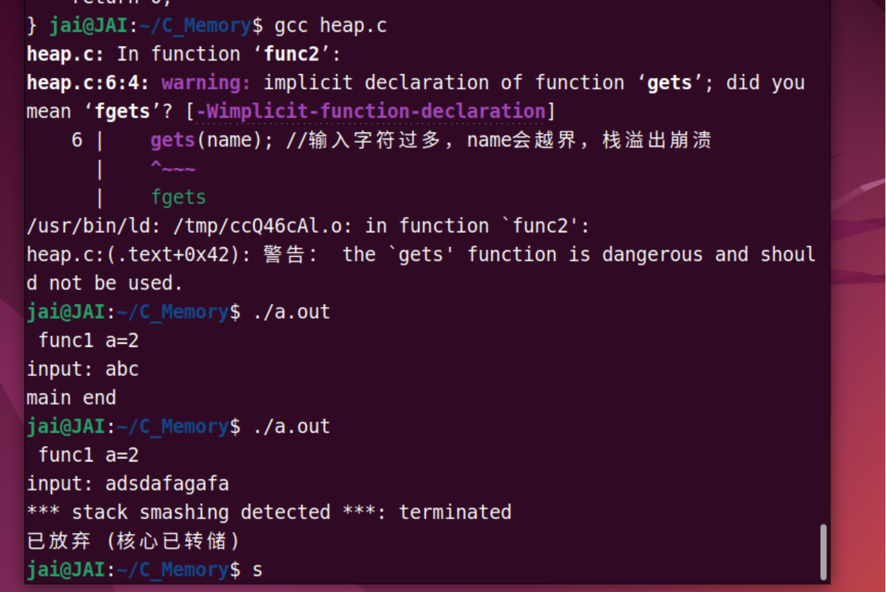
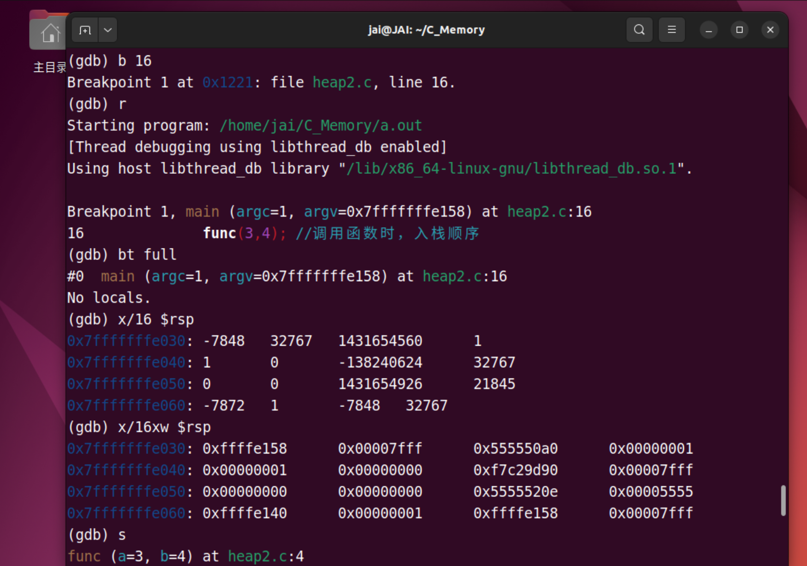
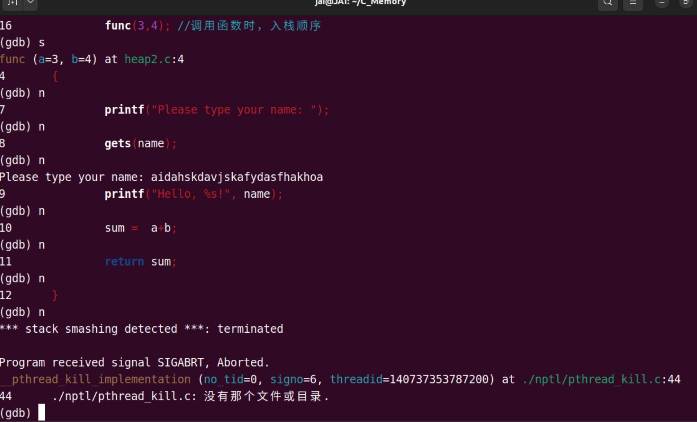
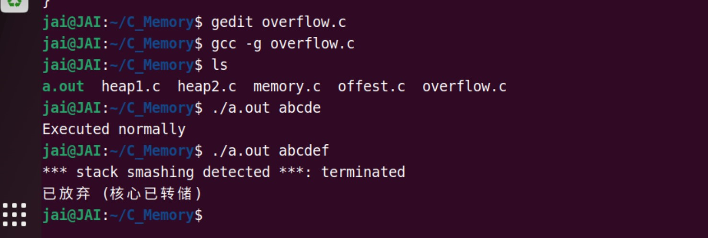
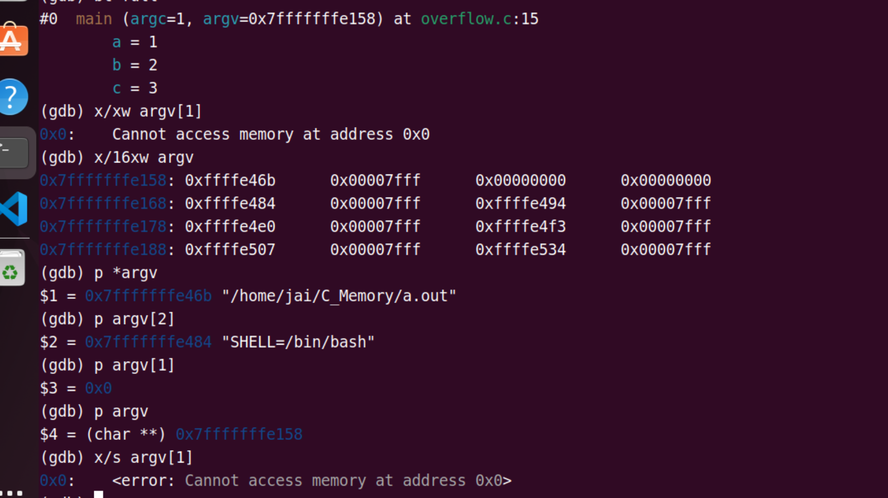

GDB
Basic document
现在有 AI 了，首先借助一个例子学会基本使用，再配合 AI 进阶使用，还需要去啃那些乏味枯燥的文档吗？值得思考，但我觉得仍需要，但配合AI能极大地提高效率！
基本操作--以栈溢出为例子
栈越界，覆盖别的数据 --> 提升调试能力
//栈: 是一种 先进后出 的数据结构 -> 函数调用返回
--- ---
| |
| 3 | <-- rsp/esp 栈顶指针(进出栈时它会变化)
| 2 |
| 1 |
----- <-- rbp/ebp 栈底指针
函数调用返回

入栈顺序: 一般是从函数的下面到上面, 参数从左到右 ( 由栈的特点FILO可知 )
(上面这个图有问题，返回地址和前栈栈底反过来了 )
#include <stdio.h>
int func2(int x,int y){
char name[6];
int sum;
printf("input: ");
gets(name); //输入字符过多，name会越界，栈溢出崩溃
return x+y;
}
int func1(int a){
int x=1;
printf(" func1 a=%d\n",a);
func2(3,4);
return a+x;
}
int main (int argc,char *argv[]) {
func1(2);
printf("main end\n");
return 0;
}

GDB调试
GDB基本操作
常用的GDB调试命令
run 或 r：启动程序的执行。
break 或 b：设置断点。通过指定行号或函数名来设置断点，如 break main 或 break 10。
continue 或 c：继续执行程序，直到下一个断点或程序结束。
next 或 n：执行下一行代码，不进入函数调用。
step 或 s：执行下一行代码，并进入函数调用。
finish：运行到函数末尾。
print 或 p：打印变量或者寄存器的值。例如 print x。
examine 或者 x : 扫描内存信息 显示某地址的内存值
info 或者 i: 显示内存信息
list 或者 l: 显示源码
backtrace 或 bt：打印函数调用栈的信息。可以查看当前的调用栈，显示函数的调用关系
info locals：打印当前函数的局部变量。
info breakpoints：显示当前设置的所有断点。
delete：删除指定的断点。例如 delete 1。
watch：设置观察点/监视d，当变量的值发生改变时，程序会停下来。
quit 或 q：退出GDB调试。
这部分以后用来可以复习GDB的操作,顺便复习栈的存储, 在大脑中建立一张内存的地图
//测试函数
#include <stdio.h>
//入栈顺序：是从下到上，从右至左，反向进栈
int func (int a,int b ) //4.b 5.a (从右至左) 这里编译器优化了好像
{
char name[6]; //3. name[]
int sum; //2.sum 从下到上
printf("Please type your name: ");
gets(name);
printf("Hello, %s!", name);
sum = a+b;
return sum;
}
int main (int argc,char *argv[])
{
func(3,4); //调用函数时，入栈顺序
//1. 返回地址入栈( 如return 0; )
return 0;
}
1. 开始调试
$ gcc -g -fno-stack-protector -z execstack main.c //编译时 关闭栈保护
$ gdb ./a.out
(gdb) l 1,25 //查看1到25行代码
(gdb) b 15 //断点设在第15行(char name[6]处)
(gdb) r //全速运行

// 看main的栈帧地址 argc = 1, argv = 0x7fffffffe158 对应地址 0x7ffffffe030
对于函数的参数，一般都是从右到左（argv[] ->argc）入栈的, 也就是右边的先入栈到栈底（也就是高地址）， 但是gdb调试出来的结果又不是这样？argc先入了栈？
可能是编译器优化的缘故
2. 执行到哪里
(gdb) i reg //查看寄存器
//rsp : 栈顶指针(进出栈时它会变化 ),有些cpu里叫esp
//rbp : 栈底指针
//rip : 指令指针(下一条 等待执行的 指令地址)
(gdb) x $rip //查看rip寄存器内容 (知道程序执行到那了)
// x/16x $rip 查看16个将要执行代码的机器码
(gdb) disassembale main //反汇编main函数
Dump of assembler code for function main:
0x000055555555520e <+0>: endbr64
0x0000555555555212 <+4>: push %rbp
0x0000555555555213 <+5>: mov %rsp,%rbp
0x0000555555555216 <+8>: sub $0x10,%rsp
0x000055555555521a <+12>: mov %edi,-0x4(%rbp)
0x000055555555521d <+15>: mov %rsi,-0x10(%rbp)
//func(3,4); 代码的内存位置和反汇编代码
0x0000555555555221 <+19>: mov $0x4,%esi //func 传参 4
0x0000555555555226 <+24>: mov $0x3,%edi //func 传参 3
0x000055555555522b <+29>: call 0x555555555189 <func>
//跳到函数 func中
0x0000555555555230 <+34>: mov $0x0,%eax //调用func后的返回地址
0x0000555555555235 <+39>: leave
0x0000555555555236 <+40>: ret
End of assembler dump.
3. 栈查看
//进入func函数后
(gdb) bt full //查看全部的 函数调用栈信息
#0 main (argc=1, argv=0x7fffffffe158)
//argc=1: 参数个数 1 对应 ./a.out
//argv=0x7fffffffe158 参数指针数组起始位置 如 ./a.out hello word 时
//argv[0] 对应 ./a.out字符串起始地址 argv[1] 对应 hello 字符串起始地址
(gdb) x $rbp //查看栈底
0x7fffffffdf90: 0x00000000 //main函数的栈低
(gdb) x/28 $rsp //查看栈顶 (进出栈时它会变化 )
//28：查看从栈顶地址开始 连续28个int 内存单元
eg.(gdb) x/20xw $rsp (x:16进制，w:word) 这里的word 4z
//入栈: argv =0x7fffffffe158 字节对齐补0 argc=1
0x7fffffffdff0: 0x00000d30 0x00000000 0x00000004 0x00000003//这一行注意
0x7fffffffe000: 0xf7fc1000 0x00007fff 0x01000000 0x00000101
0x7fffffffe010: 0x00000002 0x00000000 0x078bfbff 0x00000000
0x7fffffffe020: 0xffffe040 0x00007fff 0x55555230 0x00005555//这一行注意
0x7fffffffe030: 0xffffe158 0x00007fff 0x555550a0 0x00000001//这一行注意
0x7fffffffe040: 0x00000001 0x00000000 0xf7c29d90 0x00007fff
0x7fffffffe050: 0x00000000 0x00000000 0x5555520e 0x00005555
进入到func函数之后,已经将func返回地址和main函数的栈帧入栈了
先记住一点, 程序不断向下运行, 栈顶指针(rsp)不断递减
所以, 从e030地址到e020地址. e020到e030地址的低地址部分里面存着main函数栈帧(e040).
高地址部分存着返回地址(0x555555555230), 这个地址可以参考2. 中的main函数的反汇编,查看call下面的那条mov指令的地址刚好就是0x555555555230
4. 进一步调试
查看覆盖内存
输入name[6]
- 未覆盖(输入了abc)

地址: 0x7fffffffe010存的内容:abcd
- 覆盖

直接无法返回
5. 大脑中建立内存图
上图的返回地址和前栈栈底反过来了
--------4G---------0xFFFFFFFF 高地址
| ----- | 0xffffffffff601000
| 内核 |
| ----- | 0xffffffffff600000 //内核系统调用 起始地址
| |
========3G=========0xC0000000
| |
|-----------------| 0x7ffffffde050 //系统栈的起始地址: 栈是向下生长
| 栈(stack) |
| -------- | 0x7fffffffe040 //main函数的栈底
| 0x00000001 | //argc=1 调用main函数时入栈
| 0x00000000 | //字节对齐
| 0x00007fff | //argv=0x7fffffffe158 指针数组首地址(64位机 8字节 小端)
| 0xffffe158 | 0x7fffffffe030
| ------- | //当main函数栈进完后，会rbp存入下一地址中，把下一地址存入rbp中，作为新栈的栈底
| 0x55555230 | //返回地址： 调用func后，返回到main的地址
| 0x00005555 |
| 0xffffe040 | //func函数的栈底：存储的上一栈的栈底(main函数的栈底 8字节)
| 0x00007fff | 0x7fffffffe020
| 0x10f911f6 |
| 0x79b1cf00 | //sum 局部变量(未初始化)入栈 -> 从下到上，从右至左进栈
| 0x00006463 |
| 0x62610002 | 0x7fffffffe010 //name[6]
| 0x00007fff |
| 0xf7facfc8 | 0x7fffffffe000 //补全
| 0x00000003 | //实参拷贝到形参 b=4 a=3;
| 0x00000004 |
|-----------------| 0x7ffffffff000
| |
| ..... |
| |
|-----------------|
| 堆(heap) |
-------------------
| DATA数据段 |
-------------------
| |
| ----- | 0x555555558000
| 代码区(只读) |
| ----- | 0x555555554000 //a.out 程序的 起始地址
| |
-------------------0x00000000 低地址
GDB 实际运用1
/*
当运行 ./a.out abcd 正常
当运行 ./a.out abcdefghijkomk 时 溢出崩溃
尝试用gdb调试分析 栈溢出 的过程
*/
#include <stdio.h>
#include <string.h>
void function2(){
printf("Execution flow changed\n");
}
void function1(char *str){
char buffer[5];
strcpy(buffer,str);
}
void main(int argc,char *argv[]){
int a=1;
int b=2;
int c=3;
function1(argv[1]);
printf("%s\n","Executed normally");
}
前置知识
在C语言中，main函数是程序的入口点，也是程序开始执行的地方。它接受两个参数：argc和argv。
argc（argument count）是一个整数，表示命令行参数的数量。它包括程序名称本身作为第一个参数。例如，如果在命令行中运行程序时输入了3个参数，那么argc的值将为4。argv（argument vector）是一个指向字符串数组的指针，其中每个字符串都是一个命令行参数。数组中的第一个元素（argv[0]）是程序的名称，后续元素（argv[1]、argv[2]等）是传递给程序的实际参数。
在Ubuntu下运行程序时，可以通过命令行输入参数。例如，假设你的程序名为myprogram，你可以在终端中输入以下命令来运行程序并传递参数：
./myprogram arg1 arg2 arg3
在这个例子中，argc的值将为4，argv的值将是一个指向包含"./myprogram"、"arg1"、"arg2"、"arg3"的字符串数组的指针。
在代码中，main函数的参数argc和argv被用来接收命令行参数。argc用于检查传递给程序的参数数量是否足够，argv[1]用于传递给function1函数的参数。
分析
当运行 ./a.out abcd 正常 当运行 ./a.out abcdefghijkomk 时 溢出崩溃
可以看出, 就是命令行参数的问题.
数组只有5个空间,但是命令行参数太多了,导致溢出


改进
| 问题 | 描述 | 修复方法 |
|---|---|---|
| 缓冲区溢出 | function1中的strcpy函数可能导致缓冲区溢出 |
使用strncpy函数，并指定目标数组的大小 |
| 缺少命令行参数检查 | main函数中没有检查命令行参数的数量 |
添加对argc的检查，确保有足够的命令行参数 |
void function1(char *str){
char buffer[5];
strncpy(buffer, str, sizeof(buffer)-1);
buffer[sizeof(buffer)-1] = '\0';
}
//main 函数中:
if (argc < 2){
printf("Insufficient command line arguments\n");
return 1;
}
GDB 实际运用2
挑战：用栈溢出漏洞，不知道密码情况下，如何验证通过
#include <stdio.h>
#include <string.h>
#define PASS_WORD "1234567"
int verify_password(char * password)
{
int authentitated;
char buffer[8];
authentitated = strcmp(password,PASS_WORD);
strcpy(buffer,password);
return authentitated;
}
int main()
{
int valid_flag = 0;
char password[1024] = {0};
while (1)
{
printf("please input password:");
scanf("%s",password);
valid_f lag = verify_password(password);
if(valid_flag)
{
printf("incorrect password!\r\n");
}
else
{
printf("Congratulation ! you have passed the verification !\r\n");
}
}
return 0;
}
目前卡住
美化
按照自己的需求定制才是最重要的，
gdb-dashboard
GDB命令行调试指南 - 操作系统2024秋 | 哈工大（深圳）
进阶使用
关键的 prompt：
我在做 [X]。如果你是一位专业人士，有更好的方法和建议吗？尽可能全面。
在命令行中使用 GDB 调试时，以下是一些专业建议：
- 使用 TUI 模式：
gdb -tui或Ctrl+X+A启用文本用户界面，同时查看源代码和调试信息。 - 设置断点：
break <function>在函数入口设置断点。break <file>:<line>在指定文件的某行设置断点。
- 条件断点：
break <location> if <condition>设置条件断点，仅在满足条件时中断。 - 查看变量：
print <variable>查看变量值。display <variable>每次停止时自动显示变量值。
- 多线程调试：
info threads查看所有线程。thread <id>切换到指定线程。
- 回溯调用栈：
bt查看当前调用栈，frame <number>切换到指定栈帧。 - 反汇编：
disassemble查看当前函数的汇编代码。 - 使用 GDB 脚本：
将常用命令写入
.gdbinit文件，自动加载配置。 - 调试核心转储：
gdb <executable> <corefile>分析程序崩溃时的核心转储文件。 - 优化调试体验：
set pagination off禁用分页。set logging on记录调试输出到文件。
这些方法可以显著提高调试效率，帮助你更快定位问题。
有些技巧真的是很有用！找机会具体用起来！